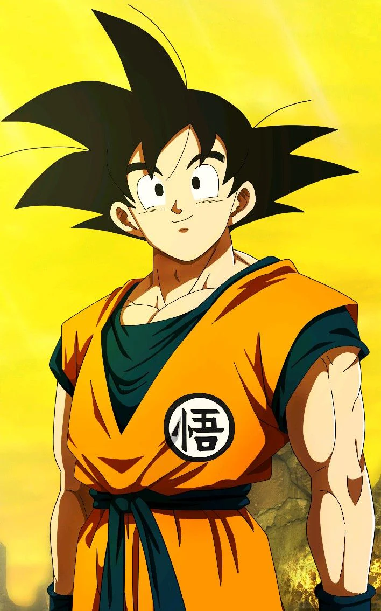
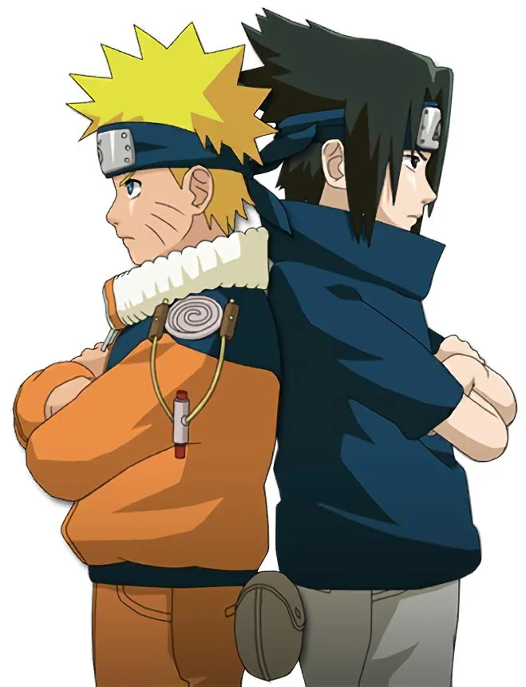
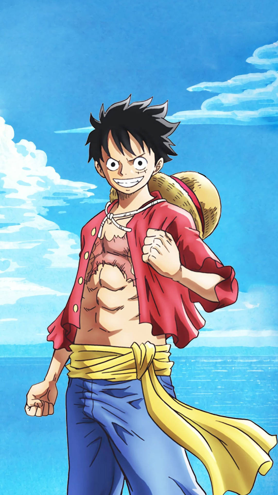
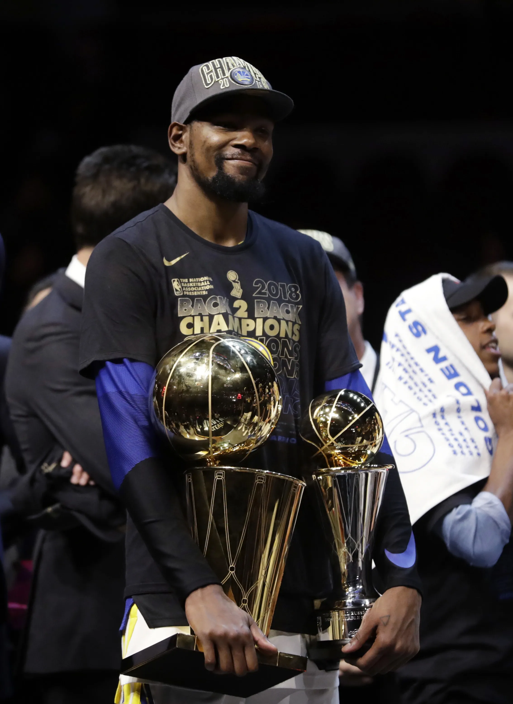
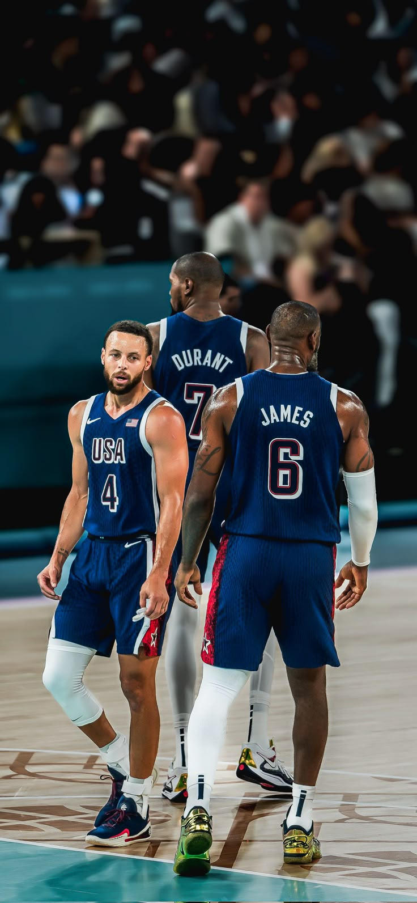

I’m Yimag Yusuf a Dallas-based developer who loves full-stack work, and innovating impactful technologies that actually help people.
Off the keyboard, I’m a big anime fan with some of my favorites below (Dragon Ball Z, Naruto, and One Piece). I also am a really big Basketball Fan with my favorite player of all time being Kevin Durant.
Here you’ll find a bit about who I am, what I enjoy, and the technologies I use.
Photo Gallery
Anime

Dragon Ball Z — Goku

Naruto

One Piece — Luffy
Basketball

Kevin Durant

KD, LeBron & Steph
Experience
Software Engineer Intern — USAA
Built and deployed a full-stack internal tool with Java, Spring Boot, React, JavaScript, and SQL to manage partner companies.
Created 5+ RESTful APIs to perform CRUD operations on the database.
Pharmacy Technician — CVS Health
Assisted pharmacists with medications, managed inventory, and restocked supplies. Provided customer service,
processed prescriptions, handled insurance claims, and maintained records.
Ensured compliance and resolved prescription, refill, and insurance issues, and communicated effectively.
Leadership
National Society of Black Engineers (NSBE)
Helped Black Engineers development by collaborating at events and networking with industry professionals.
Organized and participated in technical workshops, enhancing students coding, DSA, and problem-solving skills.
Hosted resume reviews and Technical/Behavioural interviews, improving students job readiness and performance.